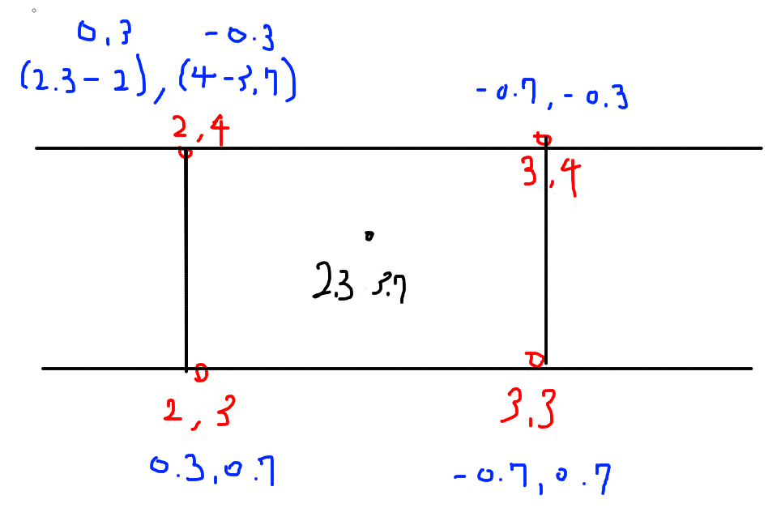
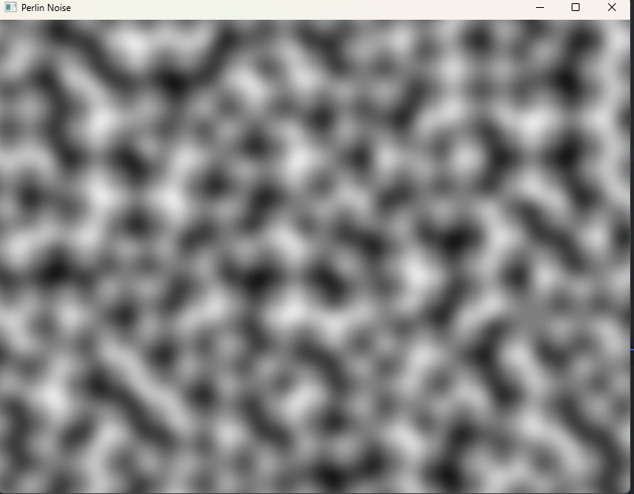
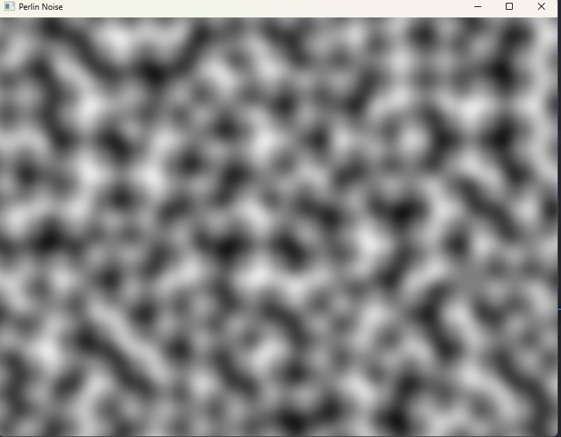
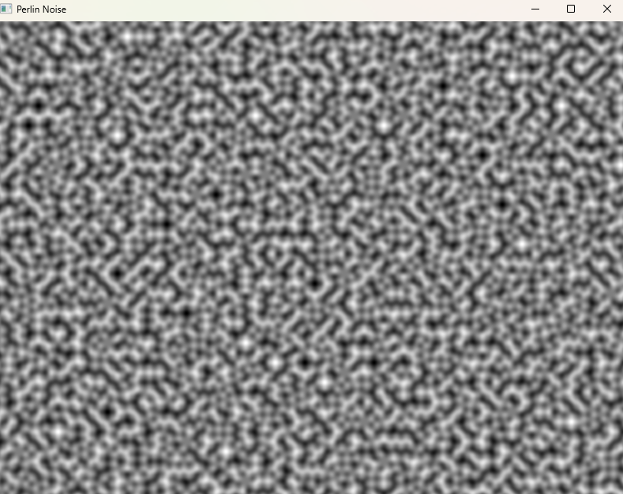
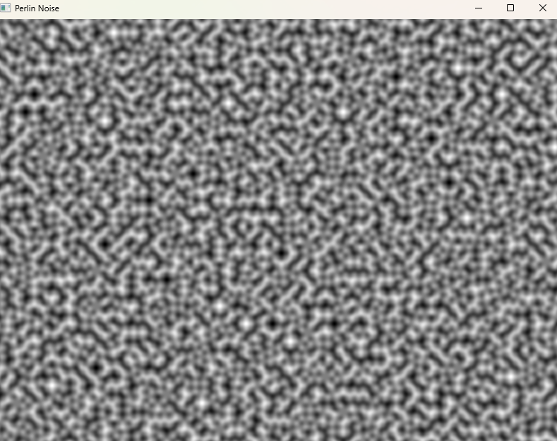

1. 각 x,y 실수를 입력으로 두었을 때, 픽셀들은 정수 그리드에 존재합니다

2. 해당 정사각형 그리드 각 꼭짓점에 그래디언트(기울기) 벡터를 할당합니다
Ken Perlin이 제안한 순열
int permutation[] = {
151, 160, 137, 91, 90, 15, 131, 13, 201, 95, 96, 53, 194, 233, 7, 225,
140, 36, 103, 30, 69, 142, 8, 99, 37, 240, 21, 10, 23, 190, 6, 148,
247, 120, 234, 75, 0, 26, 197, 62, 94, 252, 219, 203, 117, 35, 11, 32,
57, 177, 33, 88, 237, 149, 56, 87, 174, 20, 125, 136, 171, 168, 68, 175,
74, 165, 71, 134, 139, 48, 27, 166, 77, 146, 158, 231, 83, 111, 229, 122,
60, 211, 133, 230, 220, 105, 92, 41, 55, 46, 245, 40, 244, 102, 143, 54,
65, 25, 63, 161, 1, 216, 80, 73, 209, 76, 132, 187, 208, 89, 18, 169,
200, 196, 135, 130, 116, 188, 159, 86, 164, 100, 109, 198, 173, 186, 3, 64,
52, 217, 226, 250, 124, 123, 5, 202, 38, 147, 118, 126, 255, 82, 85, 212,
207, 206, 59, 227, 47, 16, 58, 17, 182, 189, 28, 42, 223, 183, 170, 213,
119, 248, 152, 2, 44, 154, 163, 70, 221, 153, 101, 155, 167, 43, 172, 9,
129, 22, 39, 253, 19, 98, 108, 110, 79, 113, 224, 232, 178, 185, 112, 104,
218, 246, 97, 228, 251, 34, 242, 193, 238, 210, 144, 12, 191, 179, 162, 241,
81, 51, 145, 235, 249, 14, 239, 107, 49, 192, 214, 31, 181, 199, 106, 157,
184, 84, 204, 176, 115, 121, 50, 45, 127, 4, 150, 254, 138, 236, 205, 93,
222, 114, 67, 29, 24, 72, 243, 141, 128, 195, 78, 66, 215, 61, 156, 180
};
순열에서 값 가져오기
순열에서 값을 가져옵니다. 각 모서리들에게 순열의 값을 할당합니다.
이때 X, Y는 입력의 정수부 값입니다.
int X = static_cast(std::floor(x)) & 255; // 정수부 2.3 => 2 int Y = static_cast (std::floor(y)) & 255; // 정수부 3.7 => 3 int valueTopRight = Permutation[Permutation[X + 1] + Y + 1]; // 2 + 1 + 3 + 1 = 7 => 13 int valueTopLeft = Permutation[Permutation[X] + Y + 1]; // 2 + 3 + 1 = 6 => 131 int valueBottomRight = Permutation[Permutation[X + 1] + Y]; // 2 + 1 + 3 = 6 => 131 int valueBottomLeft = Permutation[Permutation[X] + Y]; // 2 + 3 = 5 => 15
같은 그리드 점에 대해서는 항상 같은 그래디언트 벡터를 가지게 됩니다.
→ 즉 여기서 x가 2 ~ 3, y가 3~4인 입력 좌표들의 모서리는 모두 위의 모서리에 들어가며, 모서리의 기울기값은 항상 같습니다.
그래디언트 벡터 선택
각 모서리가 가진 순열의 값들은 밑의 정해진 기울기 4개 중에 1개를 가져오게 됩니다.
Vector2 GetGradientVector(int v) {
int h = v & 3;
if (h == 0)
return Vector2(1.0f, 1.0f);
else if (h == 1)
return Vector2(-1.0f, 1.0f);
else if (h == 2)
return Vector2(-1.0f, -1.0f);
else
return Vector2(1.0f, -1.0f);
}
Ken Perlin은 왜 이 방식을 사용했을까?
만약 매번 모서리 기울기 값에 새로운 무작위 벡터를 생성한다면, 많은 연산이 필요하고 속도가 느려질 것입니다.
특히 3차원 공간에서는 8개의 모서리 벡터를 매번 계산해야 하므로 비용이 더 큽니다.
그래서 Perlin 노이즈 알고리즘에서는 256개의 무작위 단위 벡터를 미리 계산해 놓고, 이 벡터들로부터 필요한 4개의 기울기 벡터를 선택하는 방식을 사용합니다.
이렇게 하면 매번 새로운 랜덤 벡터를 생성할 필요가 없어져 전체 계산 비용이 크게 절감됩니다.
대신 노이즈 패턴이 256 주기로 반복되는 단점이 있지만, 대부분의 경우에는 충분히 자연스럽습니다.
즉, 계산 효율성을 위해서입니다!
| 기울기 벡터 | 장점 | 단점 |
|---|---|---|
| 랜덤 | 더 자연스러운 패턴 생성 | 계산 속도 느림 |
| 고정 | 계산 속도 빠름 | 패턴의 자연스러움 감소, 반복 가능성 증가 |
- 랜덤 그래디언트는 더욱 자연스럽고 부드러운 Perlin Noise 패턴을 만들 때 사용됩니다.
- 순열 그래디언트는 더욱 빠르고 효율적하게 Perlin Noise를 계산할 때 사용됩니다.
3. 각 모서리점에서 입력 점까지의 거리 벡터를 구합니다
각 모서리 점의 좌표는 다음과 같습니다.

모서리 점에서 입력 점까지의 거리 벡터를 구합니다.
거리 벡터를 구하는 공식은 다음과 같이 구할 수 있습니다.
xf = x - floor(x); //소수부 0.3 yf = y - floor(y); //소수부 0.7 Vector2 topRight(xf - 1.0f, yf - 1.0f); // -0.7,-0.3 Vector2 topLeft(xf, yf - 1.0f); // 0.3, -0.3 Vector2 bottomRight(xf - 1.0f, yf); // -0.7 0.7 Vector2 bottomLeft(xf, yf); // 0.3, 0.7
예시 계산
x = 2.3, y = 3.7, xf = 0.3, yf = 0.7
- TR = 2.3 - (3), 3.7 - (4) = -0.7, -0.3 = xf - 1, yf - 1
- TL = 2.3 - (2), 3.7 - (4) = 0.3, -0.3 = xf, yf - 1
- BR = 2.3 - (3), 3.7 - (3) = -0.7, 0.7 = xf - 1, yf
- BL = 2.3 - (2), 3.7 - (3) = 0.3, 0.7 = xf, yf
4. 각 모서리 점의 오프셋 벡터와 모서리 점의 기울기를 내적합니다
그래디언트 벡터의 영향력은 거리에 따라 커집니다.
그래서 각 모서리 점들의 영향력을 구하기 위해 내적을 이용합니다.
float dotTopRight = topRight.dot(GetGradientVector(valueTopRight)); float dotTopLeft = topLeft.dot(GetGradientVector(valueTopLeft)); float dotBottomRight = bottomRight.dot(GetGradientVector(valueBottomRight)); float dotBottomLeft = bottomLeft.dot(GetGradientVector(valueBottomLeft));

5. 내적한 값들을 혼합하여 단일의 값으로 만듭니다
보간해야 할 값이 4개(모서리 4개) 있지만 한 번에 2개의 값만 보간할 수 있습니다.
따라서 Perlin 노이즈에 대한 보간법을 사용하는 방법은:
- 왼쪽 하단과 왼쪽 상단의 값을 함께 보간
- 그 다음으로 오른쪽 하단과 오른쪽 상단을 보간
- 그 두 개의 값을 보간하여 최종 값을 얻습니다
float Fade(float t) { // 6t5-15t4+10t3
return ((6 * t - 15) * t + 10) * t * t * t;
}
float u = Fade(xf);
float v = Fade(yf);
return Lerp(u, // x축
Lerp(v, dotBottomLeft, dotTopLeft), // Left y축
Lerp(v, dotBottomRight, dotTopRight) // right y축
);
Fade 함수의 역할
Fade() 함수는 입력의 소수부(xf, yf)를 사용하여 부드러운 보간(smooth interpolation)을 수행합니다.
이 함수는 입력 값 t를 0에서 1 사이의 값으로 매핑하며, 다항식 곡선을 따라 변화합니다.
결과적으로, 부드러운 펄린 노이즈 값을 만들기 위해 사용됩니다.
Fade 함수를 사용하지 않으면 단순 선형 보간이 되어 모서리가 많이 꺾이게 됩니다.
- 0.0과 0.5(제외) 사이의 t 값이 주어지면 변환된 값은 약간 더 작아집니다 (그러나 최소치는 0.0)
- 0.5(제외)와 1.0 사이의 t 값이 주어지면 변환된 값은 약간 더 커집니다 (단, 1.0으로 제한됨)
- 0.5의 경우 변환된 값은 0.5여야 합니다
Fade 함수 비교
Fade 안 썼을 때

u = xf = 0.1 v = yf = 0.9 Lerp(v, dotBottomLeft, dotTopLeft) = -0.8 + 0.9 * (0.6 - (-0.8)) = 0.38 Lerp(v, dotBottomRight, dotTopRight) = 0.4 + 0.9 * (-0.5 - 0.4) = -0.31 최종 결과 = Lerp(u, 0.38, -0.31) = 0.38 + 0.1 * (-0.31 - 0.38) = 0.323

Fade 썼을 때

u = Fade(xf) = Fade(0.1) = 0.0216 v = Fade(yf) = Fade(0.9) = 0.9959 Lerp(v, dotBottomLeft, dotTopLeft) = -0.8 + 0.9959 * (0.6 - (-0.8)) = 0.5951 Lerp(v, dotBottomRight, dotTopRight) = 0.4 + 0.9959 * (-0.5 - 0.4) = -0.4951 최종 결과 = Lerp(u, 0.5951, -0.4951) = 0.5951 + 0.0216 * (-0.4951 - 0.5951) = 0.5746
연속성의 중요성
- 입력 값이 조금만 변경되어도 격자 사각형의 모서리 중 일부만 변경됩니다. 나머지 모서리는 그대로입니다.
- 2 ~ 3 격자에서 3 ~ 4의 격자에 입력 점이 들어가면, 모서리 점 2개는 동일합니다.
- 그리고 그 모서리의 상수 벡터도 그대로입니다.
- 그렇게 되면 최종 값도 약간 변경됩니다.
- 즉, 입력이 (3.01, 2.01)에서 (2.99, 1.99)처럼 격자 사각형을 변경하더라도 모서리 중 2개가 변경되더라도 나머지 2개는 변경되기 때문에 최종 값은 여전히 매우 가깝습니다.
6. 보간한 결과 값을 컬러에 적용합니다
for (int y = 0; y < windowHeight; y++) {
for (int x = 0; x < windowWidth; x++) {
float persistence = 0.5f; // Persistence value adjustment
float frequency = 0.01f;
float n = Noise2D(x * frequency, y * frequency);
float value = n;
value = (value + 1.0f) / 2.0f; // Normalize to [0, 1]
sf::Color color(
static_cast(255 * value),
static_cast(255 * value),
static_cast(255 * value)
);
textureImage.setPixel(x, y, color);
}
}
7. 프랙탈 브라운 모션
옥타브 구현
훨씬 더 나은 펄린 노이즈 결과를 위해서 구현합니다.
위의 결과 값은 최종 하이트맵에 사용하기에 아직 너무 부드럽습니다.
float n = Noise2D(x * frequency, y * frequency);
위의 frequency가 주파수
- 값이 낮을수록 부드러운 노이즈
- 값이 높을수록 좁고 뾰족한 노이즈
주파수별 노이즈 비교
주파수 1의 노이즈


주파수 2의 노이즈
 

주파수 3의 노이즈


주파수 8의 노이즈
 

옥타브들을 더하기
각 서로 다른 진폭과 주파수를 갖는 여러 개의 노이즈를 만들어서
한 레이어의 주파수가 이전 레이어의 두 배인 경우 이 레이어를 옥타브라고 합니다.
- 첫 번째 옥타브는 산맥의 전체적인 모양을 구성합니다. 주파수가 작고(산이 백만 개가 아님) 진폭은 1입니다.
- 두 번째 옥타브는 산맥에 더 작은(진폭을 줄임) 더 시끄러운 세부 정보를 추가합니다(주파수를 높입니다).
- 최종(그리고 아름다운) 결과를 얻을 때까지 산에 점점 더 작은 세부 사항을 추가하는 등 이 작업을 계속할 수 있습니다.
주요 파라미터
주파수 (Frequency):
- 코드에서 frequency 변수에 의해 설정됩니다.
- 초기값은 0.005f입니다.
- 값이 낮을수록 더 부드럽고 완만한 변화를 가진 노이즈가 생성됩니다.
- 반대로 값이 높을수록 좁고 뾰족한 변화를 가진 노이즈가 생성됩니다.
진폭 (Amplitude):
- 코드에서 amplitude 변수에 의해 설정됩니다.
- 초기값은 1.0f입니다.
- 값이 높을수록 더 강력하고 뚜렷한 노이즈가 생성됩니다.
- 반대로 값이 낮을수록 더 미약하고 희미한 노이즈가 생성됩니다.
지속성 (Persistence):
- 코드에서 persistence 변수에 의해 설정됩니다.
- 초기값은 0.5f입니다.
- 값이 높을수록 각 옥타브에서 이전 옥타브보다 더 적은 영향을 미칩니다.
- 값이 낮을수록 각 옥타브가 이전 옥타브와 비슷한 영향을 미칩니다.
프랙탈 브라운 모션 구현
float FractalBrownianMotion(float x, float y, int numOctaves) {
float result = 0.0f;
float amplitude = 1.0f;
float frequency = 0.005f;
float persistence = 0.5f; // Persistence value adjustment
for (int octave = 0; octave < numOctaves; octave++) {
float n = amplitude * Noise2D(x * frequency, y * frequency);
result += n;
amplitude *= persistence; // Amplitude decay
frequency *= 2.0f;
}
result = std::max(-1.0f, std::min(1.0f, result));
return result;
}